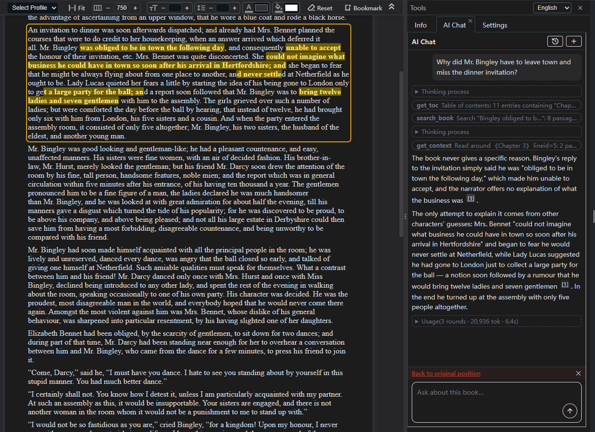

Ask About This Book
The AI first looks for relevant passages in the book you are reading, then answers from them — rather than talking in generalities from outside knowledge.
Open the chat
- Open a book.
- Click AI Chat in the toolbar; the chat panel opens on the right.
- Type a question and send it.

What to ask
- Summarize — "What is this chapter mainly about?"
- Explain — "What does X mean here?"
- Locate — "Where is Y first mentioned in the book?"
- Compare — "How does the author's view of A differ from B?"
- Follow up — keep asking about the previous answer; you do not need to repeat the context.
Where the answer comes from
The numbered markers in an answer are citations. Every answer shows which passage of the book it is based on, and you can click through to check it yourself.
How to use them
- Ask a question in AI Chat and wait for the answer to finish.
- Click any numbered marker.
- The reader jumps to the matching chapter and passage, and marks the cited spot.
What the two marks mean
| Mark | Meaning |
|---|---|
| Yellow outline | The paragraph the answer cites — "the source is here". |
| Yellow highlight | The exact sentences from the original that the answer actually uses word for word — "these are the lines". |
Why there is sometimes an outline but no highlight
If the AI summarizes or paraphrases a paragraph, no sentence from the original is used intact, so only the paragraph is outlined. That tells you the answer relies on the meaning of the paragraph rather than on one particular sentence.